폐기물처리기사 (2011-03-20 기출문제)
1과목: 폐기물 개론
1. 쓰레기의 양이 2,000m3이며, 그 밀도는 0.95t/m3이다. 적재용량 7ton의 트럭이 있다면 운반하는데 몇 대의 트럭이 필요한가?
- 235대
- 256대
- 272대
- 286대
(정답률: 알수없음)

2. 고형분이 50%인 음식쓰레기 10톤을 소각하기 위해 수분함량을 25%가 되도록 건조시켰다. 이 건조쓰레기의 중량은? (단, 쓰레기 비중 1.0 기준)
- 3.33t
- 4.72t
- 5.54t
- 6.67t
(정답률: 알수없음)
3. 밀도가 200kg/m3인 폐기물을 압축하여 밀도가 500kg/m3가 되도록 하였다면 압축된 폐기물 부피는?
- 초기부피의 25%
- 초기부피의 30%
- 초기부피의 40%
- 초기부피의 45%
(정답률: 알수없음)
4. 파쇄장치 중 전단파쇄기에 관한 설명으로 옳지 않은 것은?
- 고정칼이나 왕복 또는 회전칼과의 교합에 의하여 폐기물을 전단한다.
- 충격파쇄기에 비하여 대체로 파쇄속도가 느리다.
- 충격파쇄기에 비하여 대체로 파쇄속도가 느리다.
- 충격파쇄기에 비하여 이물질 혼입에 강하다.
(정답률: 알수없음)
5. 1일 1인당 폐기물 발생량이 0.8kg이다. 이 폐기물의 밀도가 0.4ton/m3이고, 차량 1대 적재 용량이 4.5m3이면 이 지역의 수거대상 인구수(차량 1대 적재 가능 인구수) 몇 인까지 가능한가?
- 2450인
- 2350인
- 2250인
- 2150인
(정답률: 알수없음)
6. 함수율 95%의 슬러지를 함수율 50%인 슬러지로 만들려면 슬러지 1ton당 얼마의 수분을 증발시켜야 하는가? (단, 비중은 1.0 기준)
- 900kg
- 850kg
- 800kg
- 750kg
(정답률: 알수없음)
7. 쓰레기를 체분석하여 다음과 같은 결과를 얻었다. 곡률계수는? (단, D10, D30, D60은 쓰레기 시료의 체중량통과백분율 각각 10%, 30%, 60%에 해당되는 직경임)
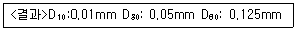
- 1.0
- 2.0
- 3.0
- 4.0
(정답률: 알수없음)
8. 선별기인 스토너(stoner)에 관한 설명으로 가장 거리가 먼 것은?
- 퇴비 중 유리조각 추출시와 같이 물렁거리는 가여분 물질로부터 딱딱한 물질을 선별할 때 주로 사용한다.
- 공기가 유입되는 다공진동판으로 구성되어 있다.
- 상당히 좁은 입자크기분포 범위내에서 밀도선별기로 작용한다.
- 중요한 운전변수는 다공판의 기울기와 공기의 유량이다.
(정답률: 알수없음)
9. 함수율 99%의 슬러지를 소화시킨 후, 탈수 공정을 통하여 함수율 80%로 낮추었다. 탈수 후 슬러지의 부피는 원래 슬러지의 몇%로 감소하였는가? (단, 소화조의 유기물 제거효율은 전체 고형물의 50%이며, 슬러지 고형물의 비중은 1.0이라고 가정한다.)
- 2.5%
- 5.0%
- 7.5%
- 10.0%
(정답률: 알수없음)
10. 폐기물에 함유된 유용 성분을 분리해 내기 위해 1000kg의 폐기물을 처리하여 800kg과 200kg으로 분류하였다. 이들 각 폐기물에 함유된 유용성분의 함량을 조사하였더니 각각의 무게의 30%와 0.15%를 차지하고 있음을 알았다. 그러면 전체 폐기물에 함유되어 있는 유용성분의 함량은 약 몇 %(무게기준)인가?
- 24%
- 27%
- 31%
- 34%
(정답률: 알수없음)
11. 다음 <조건>의 경우, Worrell식에 의한 선별효율(%)은?
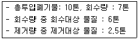
- 56.7
- 58.8
- 62.3
- 65.9
(정답률: 알수없음)
12. 밀도가 350kg/m3인 쓰레기 12m3 중 비가연성 부분이 중량비로 약 65%를 차지하고 있을 때, 가연성 물질의 양은?
- 1.32톤
- 1.38톤
- 1.43톤
- 1.47톤
(정답률: 알수없음)
13. 쓰레기 선별에 사용되는 직경이 3.2m인 트롬멜 스크린의 최적속도는?
- 11rpm
- 15rpm
- 19rpm
- 24rpm
(정답률: 알수없음)
14. 500세대(세대당 평균 가족수 5인)인 아파트에서 배출하는 쓰레기를 3일마다 수거하는데 적재용량 8.0m3의 트럭 5대(1회 기준)가 소요된다. 쓰레기 단위 용적당 중량이 210kg/m3이라면 1인 1일당 쓰레기 배출량은?
- 1.12 kg/인·일
- 1.38 kg/인·일
- 1.67 kg/인·일
- 1.92 kg/인·일
(정답률: 알수없음)
15. 인구 15만명, 쓰레기발생량 1.4kg/인·일, 쓰레기 밀도 400kg/m3, 일일 운전시간 6시간, 운반거리 6km, 적재용량 12m3, 1회 운반 소요시간 60분(적재시간, 수송시간 등 포함)일 때 운반에 필요한 일일소요 차량대수는? (단, 대기차량 3개, 압축비 1.5)
- 6
- 8
- 10
- 12
(정답률: 알수없음)
16. 쓰레기 수집방법 중 pipe-line 방식에 관한 설명으로 옳지 않은 것은?
- 고장 및 긴급사고 발생에 대한 대처방법이 필요하다.
- 쓰레기 발생 빈도가 낮아야 현실성이 있다.
- 장거리 수송이 곤란하다.
- 가설 후 경로변경이 곤란하고 설치비가 높다.
(정답률: 알수없음)
17. 전과정 평가(LCA)의 평가단계 순서로 옳은 것은?
- 목적 및 범위설정-목록분석-개선평가 및 해석-영향평가
- 목적 및 범위설정-목록분석-영향평가-개선평가 및 해석
- 목록분석-목적 및 범위설정-개선평가 및 해석-영향평가
- 목록분석-목적 및 범위설정-영향평가-개선평가 및 해석
(정답률: 80%)
18. 폐기물의 수거노선 설정시 고려해야 할 사항으로 가장 거리가 먼 것은?
- 언덕길은 내려가면서 수거한다.
- 발생량이 적으나 수거빈도가 동일하기를 원하는 곳은 같은 날 가장 먼저 수거한다.
- 가능한 한 지형지물 및 도로 경계와 같은 장벽을 사용하여 간선도로 부근에서 시작하고 끝나도록 배치하여야 한다.
- 가능한 한 시계방향으로 수거노선을 정하여 U자형 회전은 피하여 수거한다.
(정답률: 알수없음)
19. 적환장에 관한 설명으로 옳지 않는 것은?
- 공중위생을 위하여 수거지로부터 먼 곳에 설치한다.
- 소형수거를 대형수송으로 연결해주는 장치이다.
- 적환장에서 재생 가능한 물질의 선별을 고려하도록 한다.
- 간선도로에 쉽게 연결될 수 있는 곳에 설치한다.
(정답률: 알수없음)
20. 어느 쓰레기를 압축시켜 용적 감소율이 58%인 경우 압축비는?
- 약 1.72
- 약 2.38
- 약 3.27
- 약 4.76
(정답률: 28%)
2과목: 폐기물 처리 기술
21. 처리용량이 25kL/day인 혐기성 소화식 분뇨처리장에 가스저장탱크를 설치하고자 한다. 가스 저류시간을 8시간으로 하고 생성 가스량을 투입 분뇨량의 8배로 가정한다면, 가스탱크의 용량은?
- 55m3
- 67m3
- 110m3
- 154m3
(정답률: 알수없음)
22. COD/TOC ＜ 2.0, BOD/COD ＜ 0.1, COD는 500mg/L 미만의 매립연한 10년 이상 된 곳에서 발생된 침출수의 처리공정의 효율성을 틀리게 나타낸것은?
- 활성탄-불량
- 이온교환수지-보통
- 화학적침전(석회투여)-불량
- 화학적산화-보통
(정답률: 알수없음)
23. 퇴비화는 도시폐기물 중 음식찌꺼기, 낙엽 또는 하수처리장 찌꺼기와 같은 유기물을 안정한 상태의 부식질(humus)로 변화시키는 공정이다. 다음 중 부식질의 특징으로 옳지 않은 것은?
- 병원균이 사멸되어 거의 없다.
- C/N비가 높아져 토양개량제로 사용된다.
- 물 보유력과 양이온교환능력이 좋다.
- 악취가 없는 안정된 유기물이다.
(정답률: 알수없음)
24. 매립지 차수막으로서의 점토 조건으로 적합하지 않은 것은?
- 액성한계 : 60%이상
- 투수계수 : 10-7cm/s 미만
- 소성지수 : 10%이상 30%미만
- 자갈 함유량 : 10%미만
(정답률: 알수없음)
25. 매립지에 쓰이는 합성차수막의 재료별 장단점에 관한 설명으로 옳지 않은 것은?
- HDPE: 대부분의 화학물질에 대한 저항성이 높다.
- CPE: 방향족 탄화수소 및 기름종류에 약하다.
- CR: 마모 및 기계적 충격에 강하다.
- EPDM: 접합상태가 양호하다.
(정답률: 알수없음)
26. 유해폐기물 고화처리방법 중 자가시멘트법에 관한 설명으로 옳지 않은 것은?
- 혼합률(MR)이 낮다.
- 장치비가 크며 숙련된 기술이 요구된다.
- 보조에너지가 필요없다.
- 고농도 황함유 폐기물에 적합하다.
(정답률: 알수없음)
27. 함수율 95%인 분뇨의 유기탄소량은 30%/TS이고 총질소량은 15%/TS이다. 이 분뇨와 혼합할 볏짚의 함수율은 25%이며 유기탄소량은 85%/TS, 총질 소량은 3%/TS이다. 분뇨 : 볏짚을 무게비 2:3으로 혼합했을 경우의 C/N비는?
- 약 23.5
- 약 25.5
- 약 27.5
- 약 29.5
(정답률: 알수없음)
28. 내륙매립방법은 셀(cell)공법에 관한 설명으로 옳지 않는 것은?
- 화재의 발생 및 확산을 방지할 수 있다.
- 쓰레기 비탈면의 경사는 15~25%의 기울기로 하는 것이 좋다.
- 1일 작업하는 셀크기는 매립처분량에 따라 결정된다.
- 발생 가스와 매립층 내 수순의 이동이 용이하다.
(정답률: 알수없음)
29. 쓰레기와 하수처리장에서 얻어진 슬러지를 함께 매립하려고 한다. 쓰레기와 슬러지의 고형물함량이 각각 50%, 20%라고 하면 쓰레기와 슬러지를 8:2로 섞을 때의 이 혼합폐기물의 함수율은? (단, 무게 기준이며 지중은 1.0으로 가정함)
- 56%
- 59%
- 62%
- 65%
(정답률: 알수없음)
30. 혐기성 소화조에서 유기물질 80%, 무기물질 20%의 슬러지를 소화 처리한 결과 소화슬러지는 유기물질 60%, 무기물질 40%로 되었다. 이때 소화율은?
- 약 54%
- 약 63%
- 약 72%
- 약 81%
(정답률: 알수없음)
31. 무기적 고형화법과 비교한 유기적 고형화법에 관한 설명으로 옳지 않는 것은?
- 수밀성이 크고 다양한 폐기물에 적용 가능하다.
- 최종 고화체의 체적 증가가 다양하다.
- 미생물, 자외선에 대한 안정성이 약하다.
- 상업화된 처리법의 현장자료가 다양하다.
(정답률: 알수없음)
32. 공극율이 0.5인 토양이 깊이 3m까지 오염되어 있다면 오염된 토양의 m2당 공극의 체적은 몇 m3인가?
- 1.0
- 1.5
- 2.0
- 2.5
(정답률: 알수없음)
33. 고형폐기물의 매립 처리시 1kg의 C6H12O6 성분의 폐기물이 혐기성 분해를 한다면 이론적 메탄가스 발생량은? (단, 표준상태기준)
- 0.28m3
- 0.37m3
- 0.45m3
- 0.56m3
(정답률: 알수없음)
34. 다음 조건의 중금속 슬러지를 시멘트 고형화할 때 부피 변화율(VCF)은?
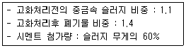
- 약 1.12
- 약 1.18
- 약 1.21
- 약 1.26
(정답률: 알수없음)
35. 매립지의 연직 차수막에 관한 설명으로 옳은 것은?
- 지중에 암반이나 점성토의 불투수층이 수직으로 깊이 분포하는 경우에 설치한다.
- 지하수 집배수시설이 불필요하다.
- 지하에 매설되므로 차수막 보강시공이 불가능하다.
- 차수막의 단위면적당 공사비는 적게 드나 총공사비는 많이 든다.
(정답률: 알수없음)
36. 다음의 조건에서 침출수 통과년수는?
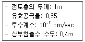
- 약 8년
- 약 10년
- 약 12년
- 약 14년
(정답률: 알수없음)
37. 어떤 소도시에서 하루 폐기물 발생량이 160ton이었고, 이것을 도랑식으로 매립하려고 한다. 도랑의 깊이가 3m, 폐기물의 밀도가 400kg/m3이며, 매립시 폐기물의 부피 감소율이 40%라고 할때 연간 필요한 매립 토지의 면적은? (단, 복토량 등 기타 조건은 고려하지 않음)
- 12800 m2/년
- 19300 m2/년
- 29200 m2/년
- 31300 m2/년
(정답률: 알수없음)
38. 습식 고온 고압 산화처리에 관한 설명으로 옳지 않는 것은?
- 산소가 부족한 상태에서 유기물을 연료화 시키는 방법이다.
- 시설의 수명이 짧으며 질소의 제거율이 낮다.
- 투자, 유지비가 높다.
- 본 장치의 주요기기는 공기압축기, 고압펌프, 열 교환기 등이다.
(정답률: 알수없음)
39. 어떤 주유소에서 오염된 토양을 복원하기 위해 오염 정도 조사를 실시한 결과, 토양오염 부피는 4000m3, BTEX는 평균 150mg/kg으로 나타났다. 이때 오염토양에 존재하는 BTEX의 총 함량은 몇 kg인가? (단, 토양의 bulk density=1.9g/cm3)
- 940
- 1040
- 1140
- 1240
(정답률: 알수없음)
40. 토양이 수분을 함유하는 힘을 토양수분장력(pF) 이라고 부른다. pF=4.0인 물기둥의 높이로 옳은 것은?
- 24=16cm
- 42=16cm
- e4=54.6cm
- 104=10,000cm
(정답률: 알수없음)
3과목: 폐기물 소각 및 열회수
41. 순수한 탄소 5kg을 이론적으로 완전연소 시키는 데 필요한 산소의 양은?
- 9.6kg
- 10.8kg
- 11.5kg
- 13.3kg
(정답률: 알수없음)
42. 증기터어빈을 증기유동방향에 따라 분류한 것으로 가장 적합한 것은?
- 축류터어빈, 반경류터어빈
- 충동터어빈, 반동터어빈, 혼합식터어빈
- 배압터어빈, 복수터어빈, 혼합터어빈, 추기뱅압터어빈, 추기복수터어빈
- 발전용(직결형터어빈, 감속형터어빈), 기계구동형(급수펌프구동터어빈, 압축기구동터어빈)
(정답률: 알수없음)
43. 유동층 소각로의 장점이 아닌 것은?
- 연소효율이 높아 미션소분의 배출이 적고 2차 연소실의 불필요하다.
- 유동매체의 열용량이 커서 액상, 기상, 고형폐기물의 전소 및 혼소가 가능하다.
- 유동매체의 축열량이 높은 관계로 단기간 정지 후 가동시 보조연료 사용없이 정상가동이 가능하다.
- 층의 유동으로 상(床))으로부터 찌꺼기 분리가 용이하다.
(정답률: 알수없음)
44. 황의 함량이 3%인 폐기물 20,000kg을 연소할 때 생성되는 SO2 가스의 총 부피는 몇 Sm3인가? (단, 표준상태를 기준으로 하여, 황성분은 전량 SO2로 가스화되며 완전연소이다.)
- 340
- 420
- 580
- 630
(정답률: 알수없음)
45. 다음 중 표면연소에 대한 설명으로 가장 적합한 것은?
- 코우크스나 옥탄과 같은 휘발성 성분이 거의 없는 연료의 연소형태를 말한다.
- 휘발유와 같이 끓는점이 낮은 기름의 연소나 왁스
- 기체연료와 같이 공기의 확산에 의한 연소를 말한다.
- 니트로글리세린 등과 같이 공기 중 산소를 필요로 하지 않고 분자 자신 속의 산소에 의해서 연소하는 것을 말한다.
(정답률: 알수없음)
46. 다음 액체연료 중 탄수소비(C/H비)가 가장 큰 것은?
- 휘발유
- 경유
- 중유
- 등유
(정답률: 알수없음)
47. 다음 중 전기집진기의 특징으로 거리가 먼 것은?
- 전압변동과 같은 조건변동에 적응하기가 용이하다.
- 압력손실이 적고 미세입자까지도 제거할 수 있다.
- 코로나 방전에 의해 발생하는 전기력으로 입자를 대전시켜 집진한다.
- 회수가치성이 있는 입자 포집이 가능하다.
(정답률: 알수없음)
48. 다음과 같은 조건에서 연소실 크기(m3)는?
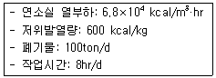
- 56m3
- 110m3
- 282m3
- 320m3
(정답률: 알수없음)
49. 소각과정에서 Cl2농도가 0.4%인 배출가스 5000Sm3/hr를 Ca(OH)2 현탁액으로 세정 처리하여 Cl2를 제거하려 할 때 이론적으로 필요한 Ca(OH)2양(kg/hr)은? [ 2Cl2+2Ca(OH)2 = CaCl2+Ca(OCl)2+2H2O ] (단, 원자량 Cl:35.5 Ca:40)
- 약 55
- 약 66
- 약 77
- 약 88
(정답률: 알수없음)
50. 탄소 및 수소의 중량조성이 각각 86%, 14%인 액체연료를 매시간 50kg 연소시켜 배기가스의 조성을 분석한 결과 CO2 12.5% O2 3.5% N2 84%이었다. 이 경우 시간당 필요한 공기량(Sm3)은?
- 약 675
- 약 775
- 약 875
- 약 935
(정답률: 알수없음)
51. 공기비가 클 때 일어나는 현상으로 가장 거리가 먼 것은?
- 연소가스가 폭발할 위험이 커진다.
- 연소실의 온도가 낮아진다.
- 부식이 증가한다.
- 열손실이 커진다.
(정답률: 알수없음)
52. 굴뚝에 설치되며 보일러 전열면을 통하여 연소가스의 여열로 보일러 급수를 예열하여 보일러 효율을 높이는 열교환 장치는?
- 공기 예열기
- 절탄기
- 과열기
- 재열기
(정답률: 알수없음)
53. 다음 중 착화온도가 낮아지는 경우는?
- 활성화에너지가 클수록
- 동질물질인 경우 발열량이 클수록
- 화학결합의 활성도가 작을수록
- 화학반응성이 작을수록
(정답률: 알수없음)
54. 연소에 관한 다음 내용 중 옳지 않은 것은?
- 공연비 = 공기의 몰수 / 연료의 몰수
- 공기비(m) = 과잉공기량 / 이론공기량
- 등가비(φ) ＞ 1 : 연료가 과잉으로 공급
- 최대탄산가스율(CO2 max, %) = (CO2 발생량 /이론건조연소가스량) * 100(%)
(정답률: 알수없음)
55. 어느 폐기물 소각처리시 회분의 중량이 폐기물의 10%라고 한다. 이때 회분의 밀도가 2g/cm3이고 처리해야 할 폐기물이 3×104kg 이라면 소각 후 남게 되는 재의 이론체적은?
- 1.0m3
- 1.5m3
- 2.0m3
- 2.5m3
(정답률: 알수없음)
56. 도시쓰레기 소각로를 설계하고자 한다. 다음 자료를 이용하여 소각로 화격자 면적을 구하면?
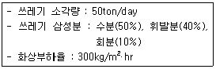
- 약 21m2
- 약 34m2
- 약 42m2
- 약 54m2
(정답률: 알수없음)
57. 폐기물 소각공정에서 발생하는 다이옥신류 저감 방안 및 제거기술에 관한 설명으로 가장 거리가 먼것은?
- 소각로 예열에 의한 다이옥신 완전분해 제거기술을 도입한다.
- 소각로 배출가스의 재연소에 의한 제거기술을 도입한다.
- 다이옥신 분해 촉매에 의한 제거기술을 도입한다.
- 활성탄에 의한 흡착기술을 도입한다.
(정답률: 알수없음)
58. 저위발열량 13500 kcal/Sm3인 기체연료를 연소시, 이론습연소가스량이 10Sm3/Sm3이고 이론연소온도는 2500℃ 라고 한다. 연료 연소가스의 평균 정압 비열은? (단, 연소용 공기, 연료 온도는 15℃)
- 0.645(kcal/Sm3·℃)
- 0.543(kcal/Sm3·℃)
- 0.417(kcal/Sm3·℃)
- 0.364(kcal/Sm3·℃)
(정답률: 알수없음)
59. 회전로 소각방식의 장단점과 가장 거리가 먼 것은?
- 비교적 열효율이 낮은 편이다.
- 경사진 구조로 용융상태의 물질은 소각에 방해를 받는다.
- 대체로 예열, 혼합, 파쇄 등 전처리 없이 주입이 가능하다.
- 대기오염 제어시스템에 분진부하율이 높다.
(정답률: 알수없음)
60. 이소프로필알콜(C3H7OH) 6kg을 완전연소하는데 필요한 이론공기량은? (단, 표준상태 기준)
- 12Sm3
- 24Sm3
- 36Sm3
- 48Sm3
(정답률: 알수없음)
4과목: 폐기물 공정시험기준(방법)
61. 다음 ( )에 내용으로 옳은 것은?
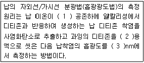
- (1)슬퍼민산암모늄 (2) 슬러민산암모늄 (3) 520
- (1) 시안화칼륨 (2)시안화칼륨 (3) 520
- (1)슬퍼민산암모늄 (2)슬퍼민산암모늄 (3) 560
- (1)시안화칼륨 (2)시안화칼륨 (3)560
(정답률: 알수없음)
62. 다음은 시안의 자외선/가시선 분광법(흡광광도법)에 관한 내용이다. ( )안에 옳은 내용은?
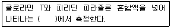
- 자색율 460nm
- 황갈색을 560nm
- 적색을 520nm
- 청색을 620nm
(정답률: 알수없음)
63. 폐기물의 강열감량 및 유기물 함량을 중량법으로 시험시료를 탄화시키기 위해 사용하는 용액으로 가장 적합한 것은?
- 15% 황산암모늄용액
- 15% 질산암모늄용액
- 25% 황산암모늄용액
- 25% 질산암모늄용액
(정답률: 알수없음)
64. 다음은 폴리클로리네이티드비페닐(PCBs)의 기체 크로마토그래프-질량분석법에 관한 설명이다. ( )안에 알맞은 것은?
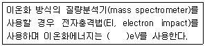
- 0.01~1.0
- 1.0~10
- 35~70
- 500~1000
(정답률: 알수없음)
65. 5톤 이상의 차량에서 적재폐기물의 시료를 채취할 때 평면상에서 몇 등분하여 채취하는가?
- 3등분
- 5등분
- 6등분
- 9등분
(정답률: 알수없음)
66. 온도에 관한 기준으로 옳지 않는 것은?
- 찬 곳은 따로 규정이 없는 한 0~15℃의 곳을 뜻한다.
- 각각의 시험은 따로 규정이 없는 한 실온에서 조작한다.
- 온수는 60~70℃로 한다.
- 냉수는 15℃이하로 한다.
(정답률: 알수없음)
67. 다음은 이온전극법에 관한 설명이다. ( )에 옳은 내용은?
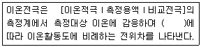
- 네른스트(Nernst)식
- 램버트(Lambert)식
- 패러데이식
- 플래밍식
(정답률: 알수없음)
68. 시료의 전처리 방법 중에 유기물 함량이 비교적 높지 않고 금속의 수산화물, 산화물, 인산염 및 황화물을 함유하고 있는 시료에 적용되는 방법으로 가장 적합한 것은?
- 질산에 의한 처리
- 질산-염산에 의한 처리
- 질산-황산에 의한 처리
- 질산-과염소산에 의한 처리
(정답률: 알수없음)
69. 폐기물분석을 위한 일반적 총칙에 관한 설명으로 옳지 않는 것은?
- 천분율을 표시할 때는 g/L, g/kg의 기호를 쓴다.
- “바탕시험을 하여 보정한다”라 함은 시료에 대한처리 및 측정을 할 때, 시료를 사용하지 않고 같은 방법으로 조작한 측정치를 빼는 것을 뜻한다.
- 진공이라 함은 따로 규정이 없는 한 15mmH2O 이하를 말한다.
- 방울수라 함은 20℃에서 정제수 20방울을 적하할 때, 그 부피가 약 1mL되는 것을 뜻한다.
(정답률: 알수없음)
70. 휘발성 저급염소화 탄화수소류 측정을 위한 기체크로마토그래피 정량방법에 관한 설명으로 옳지 않는 것은?
- 시료 중의 트리클로로에틸렌, 테트라클로로에틸렌을 헥산으로 추출하여 기체크로마토그래피법으로 정량하는 방법이다.
- 이 시험기준에 의해 시료 중에 트리클로로에틸렌(C2HCl3)의 정량한계는 0.008mg/L이다.
- 검출기는 전자포획검출기 또는 전해전도검출기를 사용한다.
- 질량분석계로는 자기장형과 사중극자형 등을 사용한다.
(정답률: 알수없음)
71. 폐기물 용출시험방법 중 용출조작기준으로 옳은 것은?
- 진탕시간을 4시간 연속으로 한다.
- 진탕기의 진탕회수는 매분당 약 300회로 한다.
- 진탕기의 진폭은 4~5cm로 한다.
- 여과가 어려운 경우에는 10분 이상 원심분리 한 후 상등액을 검액으로 한다.
(정답률: 알수없음)
72. ( )안에 들어갈 내용으로 옳은 것은?
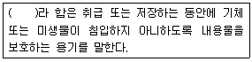
- 밀폐용기
- 기밀용기
- 밀봉용기
- 폐쇄용기
(정답률: 알수없음)
73. 다음은 기름성분을 중량법으로 분석할 때에 관련된 내용이다. ( )안에 옳은 내용은?
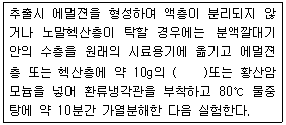
- 질산암모늄
- 염화나트륨
- 아비산나트륨
- 질산나트륨
(정답률: 알수없음)
74. 비소의 원자흡수분광광도법(원자흡광광도법)에 관한 설명으로 옳지 않는 것은?
- 이염화주석으로 시료 중의 비소를 3가 비소로 환원시킨다.
- 비화수소를 원자화하여 193.7nm에서 측정한다.
- 비화수소를 통기하여 아르곤-수소 불꽃에서 원자화시킨다.
- 비소측정에 사용되는 아연분말은 고순도(비소함량이 0.⑤mg/L 이하)의 아연분말을 사용해야 한다.
(정답률: 알수없음)
75. 수은의 원자흡수분광광도법(원자흡광광도법)에 관한 시험방법으로 옳은 것은?
- 시료에 이염화주석을 넣어 금속수은으로 환원시킨다.
- 시료에 아연을 넣어 수은증기를 발생시킨다.
- 정량한계는 0.⑤mg/L이다.
- 벤젠 등 휘발성 유기물질의 방해를 방지하기 위해 염산으로 분해시킨 후 시험한다.
(정답률: 알수없음)
76. 일반적으로 대상폐기물의 양이 4.0ton인 경우의 시료의 최소수는?
- 8
- 10
- 12
- 14
(정답률: 알수없음)
77. 자외선/가시선 분광법(흡광광도법)에 의하여 폐기물내 크롬을 분석하기 위한 실험방법에 관한 설명으로 옳은 것은?
- 발색시 황산의 최적 농도는 0.5N이다. 만일 황산의 양이 부족하면 황산(1+9) 5mL을 넣어 시험한다.
- 시료 중에 철이 2.5mg 이하로 공존할 경우에는 다이페닐카바자이드 용액을 넣기전에 5% 피로인산나트륨10수화물 용액 2mL를 넣는다.
- 적자색의 착화합물을 흡광도 460nm에서 측정한다.
- 총 크롬을 과망간산나트륨을 사용하여 6가 크롬으로 산화시킨 다음 알칼리성에서 다이페닐카바자이드와 반응시킨다.
(정답률: 알수없음)
78. 시료의 전처리 방법 중 염화암모늄 염화마그네슘, 염화칼슘 등의 다량 함유한 시료를 회화로에서 유기물을 분해하고자 하는 경우, 휘산되어 손실을 가져올 우려가 가장 적은 금속은?
- 납
- 철
- 주석
- 구리
(정답률: 알수없음)
79. 시료 채취를 위한 용기 사용에 관한 다음 설명으로 옳지 않은 것은?
- 시료용기는 무색경질의 유리병 또는 폴리에틸렌병, 폴리에틸렌백을 사용한다.
- 시료 중에 다른 물질의 혼입이나 성분의 손실을 방지하기 위한 밀봉마개로 코르크 마개를 사용하여야 하며, 코르크 마개에 파리핀지, 유지 또는 셀로판지를 씌워 사용해서는 안된다.
- 노말헥산 추출물질, 유기인, 폴리클로리네이티드비페닐(PCBs) 및 휘발성 저급 염소화 탄화수소류 실험을 위한 시료의 채취시는 무색 결질의 유리병을 사용하여야 한다.
- 채취용기는 시료를 변질시키거나 흡착하지 않는 것이어야 하며 기밀하고 누수나 흡습성이 없어야 한다.
(정답률: 알수없음)
80. 구리를 원자흡수분광광도법(원자흡광광도법)으로 측정하여 정량할 때 일반적으로 정량한계와 측정파장의 조합으로 옳은 것은?
- 0.002mg/L, 324.7nm
- 0.008mg/L, 324.7nm
- 0.002mg/L, 457.9nm
- 0.008mg.L, 457.9nm
(정답률: 알수없음)
5과목: 폐기물 관계 법규
81. 폐기물발생억제지침 준수의무대상 배출자의 규모기준으로 옳은 것은?
- 최근 2년간의 연평균 배출량을 기준으로 지정폐기물을 100톤 이상 배출하는 자
- 최근 2년간의 연평균 배출량을 기준으로 지정폐기물을 200톤 이상 배출하는 자
- 최근 3년간의 연평균 배출량을 기준으로 지정폐기물을 100톤 이상 배출하는 자
- 최근 3년간의 연평균 배출량을 기준으로 지정폐기물을 200톤 이상 배출하는 자
(정답률: 알수없음)
82. 환경부령으로 정하는 폐기물처리시설의 설치를 마친자는 환경부령으로 정하는 검사기관으로부터 검사를 받아야 한다. 다음 중 폐기물처리시설과 해당 검사기관의 연결로 가장 적합한 것은? (단, 그밖에 환경부장관이 인정, 고시하는 기관 제외)
- 소각시설 : 한국건설기술연구원
- 매립시설 : 한국기계연구원
- 멸균분쇄시설 : 보건환경연구원
- 음식물류 폐기물처리시설 : 한국농어촌공사
(정답률: 20%)
83. 폐기물재활용신고자가 '폐고무'를 재활용하는 경우 환경부령으로 정하는 폐기물처리기간으로 옳은 것은?
- 15일
- 30일
- 60일
- 90일
(정답률: 알수없음)
84. 시도지사, 시장군수구청장 또는 지방환경관서의 장은 관계공무원이 사업장 등에 출입하여 검사할 때에 배출되는 폐기물이나 재활용한 제품의 성분, 유해 물질 함유 여부의 검사를 위한 시험분석이 필요하면 시험분석기관으로 하여금 시험분석하게 할 수 있다. 다음 중 시험분석기관과 가장 거리가 먼 것은? (단, 그 밖에 환경부장관이 인정, 고시하는 기관은 고려하지 않음)
- 한국환경시험원
- 한국환경공단
- 유역환경청 또는 지방환경청
- 수도권매립지관리공사
(정답률: 알수없음)
85. 다음은 폐기물처리업(수집운반 또는 처리)과 관련된 사항이다. 아래 내용에서 언급한 '환경부령으로 정하는 중요사항'으로 옳지 않은 것은?
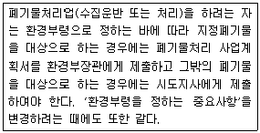
- 폐기물처리시설 설치 예정지(지정폐기물 수집운반업의 경우에는 주차장 소재지, 지정폐기물 외의 폐기물 수집운반업의 경우에는 연락장소 또는 사무실 소재지를 포함한다.)
- 영업구역(생활폐기물의 수집운반업만 해당한다.)
- 수집운반량(허가받은 량의 100분의 30이상 증가되는 경우만 해당한다.)
- 운반차량의 수 또는 종류
(정답률: 알수없음)
86. 폐기물처리시설의 종류 중 기계적 처리시설기준으로 옳지 않은 것은?
- 압축시설(동력 10마력 이상인 시설로 한정한다.)
- 절단시설(동력 10마력 이상인 시설로 한정한다.)
- 탈수시설(동력 10마력 이상인 시설로 한정한다.)
- 용융시설(동력 10마력 이상인 시설로 한정한다.)
(정답률: 알수없음)
87. 폐기물처리시설 주변지역 영향 조사 기준 중 미세먼지와 다이옥신 조사 지점 기준으로 옳은 것은?
- 해당 시설에 인접한 주거지역 중 2개소 이상 지역의 일정한 곳으로 한다.
- 해당 시설에 인접한 주거지역 중 3개소 이상 지역의 일정한 곳으로 한다.
- 해당 시설에 인접한 주거지역 중 오염이 가장 심할 것으로 예상되는 2개소 이상 일정한 곳으로 한다.
- 해당 시설에 인접한 주거지역 중 오염이 가장 심할 것으로 예상되는 3개소 이상 일정한 곳으로 한다.
(정답률: 알수없음)
88. 폐기물을 재활용하려는 자가 사업장을 관할하는 시도지사에게 제출하여야 하는 폐기물 재활용 신고서에 첨부되어야 할 서류와 가장 거리가 먼 것은?
- 재활용 과정에서 발생하는 폐기물 처리 계획서
- 재활용시설의 설치명세서
- 보관시설이나 보관용기의 설치명세서
- 재활용 품질확인 및 용도승인서
(정답률: 알수없음)
89. 폐기물재활용신고자에 대하여 교육을 실시하는 기관으로 가장 적합한 것은?
- 한국환경공단
- 한국폐기물협회
- 국립환경인력개발원
- 한국자원재생공사
(정답률: 알수없음)
90. 의료 폐기물을 제외한 지정폐기물의 처리에 관한 기준 및 방법에서 액상 폐유의 처리 기준 및 방법과 가장 거리가 먼 것은?
- 증발농축방법으로 처리한 후 그 잔재물은 소각하거나 안정화 처리하여야 한다.
- 응집침전방법으로 처리한 후 그 잔재물을 소각하여야 한다.
- 고화 처리한 후 정제, 분리, 여과하여야 한다.
- 소각하거나 안정화 처리하여야 한다.
(정답률: 알수없음)
91. 다음은 관리형 매립시설의 침출수 배출허용기준 중 중크롬산칼륨에 따른 화학적 산소요구량에 관한 설명이다. ( )안에 내용으로 옳은 것은?
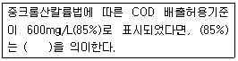
- 배출효율
- 분해효율
- 처리효율
- 정확도 요구효율
(정답률: 알수없음)
92. 의료폐기물의 종류 중 위해의료폐기물의 분류에 해당하지 않는 것은?
- 조작물류폐기물
- 격리계폐기물
- 생물화학폐기물
- 혈액오염폐기물
(정답률: 알수없음)
93. 생활폐기물배출자는 관할 특별자치도, 시군구의 조례로 정하는 바에 따라 생활환경 보전상 지장이 없는 방법으로 그 폐기물을 스스로 처리하거나 양을 줄여서 배출하여야 한다. 이를 위반한 자에 대한 과태료 부과 기준으로 옳은 것은?
- 100만원 이하의 과태료
- 200만원 이하의 과태료
- 300만원 이하의 과태료
- 500만원 이하의 과태료
(정답률: 알수없음)
94. 폐기물관리종합계획에 포함되어야 하는 사항과 가장 거리가 먼 것은?
- 폐기물 관리 여건 및 전망
- 부분별 폐기물 관리 현황
- 재원 조달 계획
- 종전의 종합계획에 대한 평가
(정답률: 알수없음)
95. 다음 중 기술관리인을 두어야 하는 폐기물처리시설의 기준으로 옳지 않은 것은?
- 소각시설로서 시간당 처리능력이 600kg(의료 폐기물을 대상으로 하는 소각시설의 경우에는 200kg) 이상인 시설
- 1일 처리능력이 100톤 이상인 압축파쇄분쇄 또는 절단시설
- 1일 처리능력이 5톤 이상인 사료화퇴비화 또는 연료화시설
- 시간당 처리능력이 200kg 이상인 멸균·분쇄시설
(정답률: 알수없음)
96. 지정폐기물 처리계획의 확인을 받아야 하는 환경부령으로 정하는 지정폐기물 중 오니를 배출하는 사업자에 관한 기준으로 옳은 것은?
- 오니를 일 평균 100킬로그램 이상 배출하는 사업자
- 오니를 일 평균 500킬로그램 이상 배출하는 사업자
- 오니를 월 평균 100킬로그램 이상 배출하는 사업자
- 오니를 월 평균 500킬로그램 이상 배출하는 사업자
(정답률: 알수없음)
97. 동물성 잔재물과 의료폐기물 중 조직물류폐기물등 부패나 변질의 우려가 있는 폐기물의 경우, 폐기물 처리명령 대상이 되는 조업중단 기간기준은?
- 5일
- 7일
- 10일
- 15일
(정답률: 알수없음)
98. 다음은 폐기물처리시설 중 관리형 매립시설의 관리기준에 관한 내용이다. ( )안의 내용으로 옳은 것은?
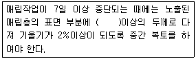
- 30cm
- 45cm
- 60cm
- 90cm
(정답률: 알수없음)
99. 폐기물관리법이 적용되지 않는 물질로 옳지 않은 거은?
- 가축분뇨의 관리 및 이용에 관한 법률에 따른 가축분뇨
- 용기에 들어잇는 기체상태의 물질
- 원자력법에 따른 방사성 물질과 이로 인하여 오염된 물질
- 수질 및 수생태계 보전에 관한 법률에 따른 수질오염 방지시설에 유입되거나 공공수역으로 배출되는 폐수
(정답률: 알수없음)
100. 폐기물 재활용을 위한 에너지 회수기준으로 옳지 않는 것은?
- 다른 물질과 혼합하지 아니하고 해당 폐기물의 저위발열량이 킬로그램당 3천킬로 칼로리 이상일 것
- 환경부장관이 정하여 고시하는 경우에는 폐기물의 30퍼센트 이상을 에너지의 회수에 이용하고 그 나머지를 원료 또는 재료로 재활용할 것
- 회수열을 모두 열원으로 스스로 이용하거나 다른 사람에게 공급할 것
- 에너지의 회수효율(회수에너지 총량을 투입에너지총량으로 나눈 비율을 말한다)이 75퍼센트 이상일 것
(정답률: 알수없음)
하나의 트럭이 적재할 수 있는 무게는 7t 이므로, 필요한 트럭 대수는 1,900t ÷ 7t = 271.43 대이다.
하지만, 트럭은 정수 대수로 구매할 수 있으므로, 272대의 트럭이 필요하다.
따라서, 정답은 "272대"이다.